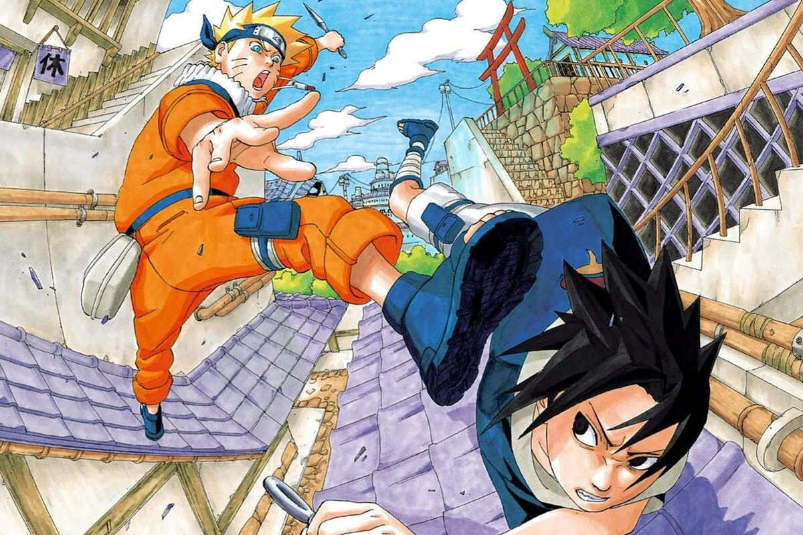
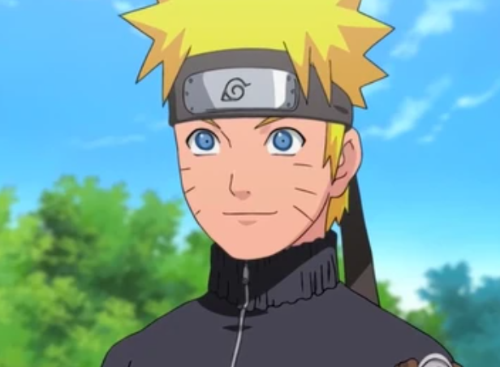
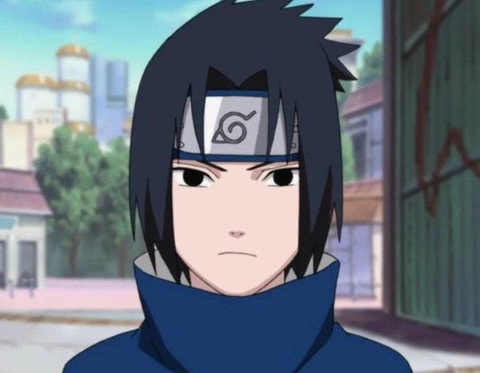
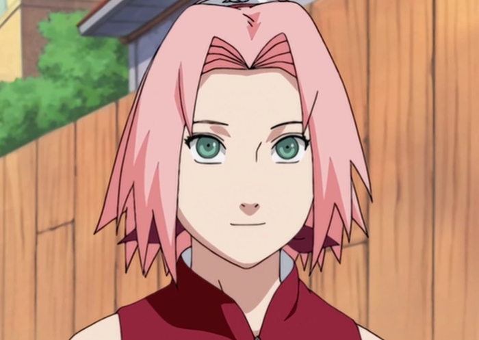
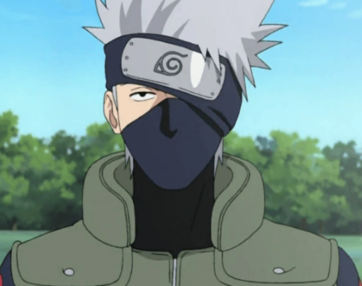
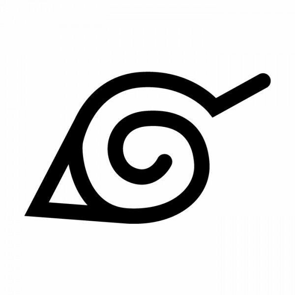
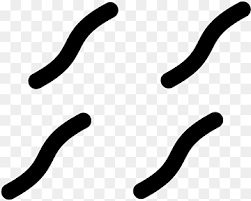
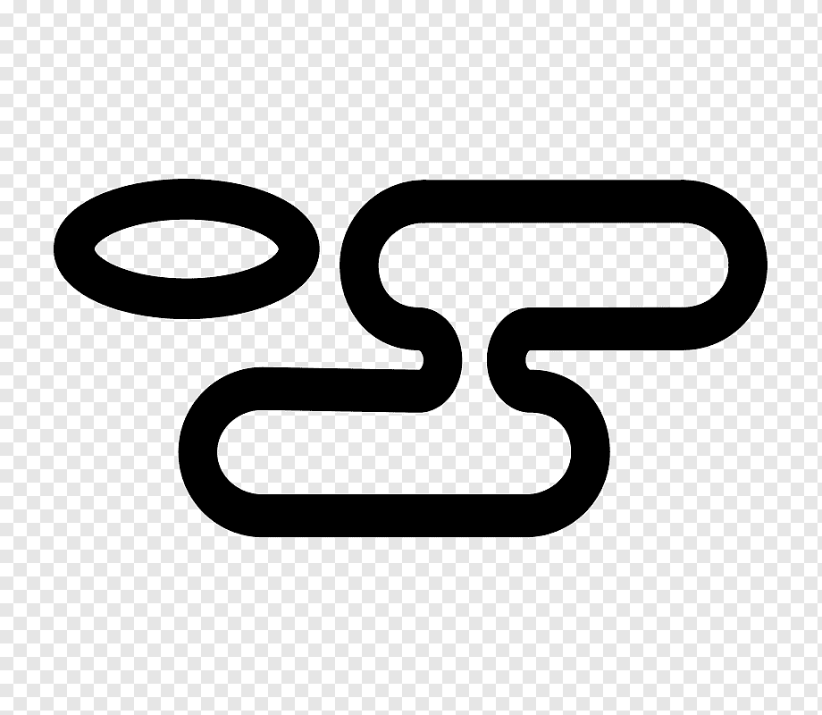
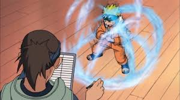

Introdução
Naruto é uma série de mangá escrita e ilustrada por Masashi Kishimoto, que conta a história de Naruto Uzumaki, um jovem ninja que constantemente procura por reconhecimento e sonha em se tornar Hokage, o ninja líder de sua vila. A série foi publicada na revista Weekly Shōnen Jump de 1999 a 2014, sendo compilada em 72 volumes tankōbon.
A história é dividida em duas partes principais: a primeira parte se passa nos anos da pré-adolescência de Naruto, enquanto a segunda parte (conhecida como Naruto Shippuden) se passa em sua adolescência, após um intervalo de dois anos e meio de treinamento intenso.
O enredo principal se foca em Naruto e seu desenvolvimento como ninja, junto com seus amigos e companheiros de equipe. A série explora temas profundos como amizade, perseverança, vingança, perdão e o ciclo do ódio, sempre centrada nas interações entre os personagens e a influência do ambiente em suas personalidades.
Personagens
Os personagens de Naruto são variados e complexos, cada um com suas próprias histórias, habilidades e motivações. Abaixo estão alguns dos principais personagens da série:
Naruto Uzumaki
O protagonista da série, um jovem ninja que carrega em seu interior o demônio Kyūbi (Raposa de Nove Caudas). Seu objetivo é se tornar Hokage de sua aldeia e ser reconhecido por todos, já que inicialmente ninguém queria estar perto dele devido ao demônio selado dentro de si. Naruto é conhecido por sua personalidade determinada e por nunca desistir de seus objetivos.
Sasuke Uchiha
Membro do clã Uchiha, é um garoto sério que possui grande habilidade para as artes ninjas, especialmente técnicas de fogo. Seu objetivo principal é ser forte o suficiente para derrotar seu irmão Itachi, que assassinou todos os demais membros do seu clã. Sasuke abandona a aldeia para treinar com Orochimaru em busca de poder.
Sakura Haruno
A única garota do Time 7, inicialmente apaixonada por Sasuke e que desprezava Naruto. Ao longo da história, Sakura desenvolve uma amizade genuína com Naruto e se torna aprendiz de Tsunade, aprendendo técnicas medicinais ninjas e se tornando uma kunoichi (ninja feminina) extremamente poderosa.
Kakashi Hatake
O primeiro sensei da equipe de Naruto, Sasuke e Sakura. É um ninja experiente, severo à primeira vista e amante de novelas para adultos. Possui o Sharingan em seu olho esquerdo, obtido de um amigo do clã Uchiha (Obito), o que lhe rendeu o apelido de "O Ninja que Copia" devido à sua capacidade de copiar técnicas de outros ninjas.
A série conta com uma vasta gama de personagens secundários organizados em times de três ninjas novatos (Genins) com seus respectivos senseis. Destacam-se os times formados por Ino, Choji e Shikamaru (com o sensei Asuma), Hinata, Kiba e Shino (com a sensei Kurenai), e Rock Lee, Tenten e Neji (com o sensei Might Guy).
Os "Três Ninjas Lendários" (Sannins) - Tsunade, Jiraiya e Orochimaru - também desempenham papéis cruciais na história, assim como os membros da organização criminosa Akatsuki, formada por ninjas renegados de diversas procedências.
Aldeias
| Símbolo | Aldeia | País | Líder | Especialidade |
|---|---|---|---|---|
|  | Konohagakure (Folha) | País do Fogo | Hokage | Ninjutsu |
| Sunagakure (Areia) | País do Vento | Kazekage | Manipulação de areia | |
|  | Kirigakure (Névoa) | País da Água | Mizukage | Jutsus de água |
|  | Kumogakure (Nuvem) | País do Trovão | Raikage | Velocidade e raiton |
| Iwagakure (Pedra) | País da Terra | Tsuchikage | Jutsus de terra |
Técnicas
Sistema de Chakra
O chakra é a energia vital fundamental no mundo de Naruto, formada pela combinação de energia física e espiritual. Os ninjas utilizam chakra para executar técnicas especiais chamadas jutsus. Kishimoto criou um sistema baseado nos cinco elementos básicos da natureza, representando a tradição do zodíaco chinês que tem grande presença no Japão.
Tipos de Jutsus
Ninjutsu: Técnicas que utilizam chakra para manifestar efeitos sobrenaturais, como manipulação dos elementos (fogo, água, terra, ar, raio) e transformações.
Genjutsu: Técnicas de ilusão que afetam o sistema nervoso do oponente, criando falsas realidades e manipulando os sentidos.
Taijutsu: Técnicas de combate corpo a corpo que enfatizam força física, velocidade e técnicas marciais, sendo o estilo preferido de personagens como Rock Lee e Might Guy.
Curiosidades
Sobre a Criação
Masashi Kishimoto primeiro criou um one-shot de Naruto em agosto de 1997 na revista Akamaru Jump. O autor revelou que estava originalmente trabalhando no mangá Karakuri para o Hop Step Award quando, insatisfeito com as mudanças da história, decidiu trabalhar em algo diferente, o que o levou a criar Naruto.
Inspirações e Referências
Quando estava criando Naruto, Kishimoto olhou para outros mangás do estilo shonen para influenciar seu trabalho, mas tentou tornar seus personagens únicos ao máximo. O design da Vila da Folha foi baseado na casa do próprio Kishimoto na Prefeitura de Okayama, no Japão.
Sucesso Mundial
A partir de 2017, Naruto se tornou a terceira série de mangá mais vendida da história, vendendo mais de 220 milhões de cópias em todo o mundo e sendo publicada em 35 países fora do Japão. A palavra "Naruto" chegou a ser um dos 10 termos mais pesquisados no Yahoo durante 2007 e 2008.
Adaptações e Mídia
Além do mangá e anime, a franquia Naruto expandiu para 11 filmes, diversos jogos eletrônicos, cartas colecionáveis, light novels e outros produtos. Um filme live-action está em desenvolvimento pela Lionsgate com Michael Gracey dirigindo, com o próprio Kishimoto envolvido na produção.
Arcos
Parte I - Formação Ninja
| Arco da Academia e Formação dos Times: | Introdução dos personagens principais e formação do Time 7 com Naruto, Sasuke, Sakura e Kakashi. |
| Arco do País das Ondas: | Primeira missão importante do Time 7, onde enfrentam Zabuza e Haku, estabelecendo temas centrais sobre sacrifício e bonds. |
| Exames Chūnin: | Torneio que testa as habilidades dos jovens ninjas, introduzindo Orochimaru como antagonista principal e revelando o poder do Sharingan de Sasuke. |
| Invasão de Konoha: | O ataque de Orochimaru e Gaara, culminando na luta entre Naruto e Gaara, que explora a solidão e o desejo de aceitação. |
| Missão de Resgate de Sasuke: | Sasuke abandona a aldeia para treinar com Orochimaru, levando a uma perseguição épica e ao confronto final entre Naruto e Sasuke no Vale do Fim. |
Parte II - Naruto Shippuden
| Resgate do Kazekage: | Naruto retorna após dois anos de treinamento para enfrentar a Akatsuki, que capturou Gaara. Introdução das novas habilidades de Naruto. |
| Reunião com Sasuke: | Primeiro encontro entre Naruto e Sasuke após o intervalo de tempo, mostrando como ambos evoluíram em poder. |
| Invasão de Pain: | O líder da Akatsuki ataca Konoha em busca de Naruto, resultando na destruição da aldeia e na maior demonstração do crescimento de Naruto como ninja e pessoa. |
| Quarta Grande Guerra Ninja: | Conflito final contra Madara Uchiha, Obito e eventualmente Kaguya Ōtsutsuki, unindo todas as cinco grandes nações shinobis. |
| Confronto Final: | Batalha definitiva entre Naruto e Sasuke, resolvendo finalmente seus conflitos pessoais e ideológicos, levando à redenção de Sasuke e ao cumprimento do sonho de Naruto. |
"Eu nunca vou voltar atrás na minha palavra... esse é o meu caminho ninja!"— Naruto Uzumaki